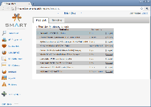
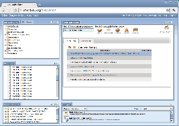
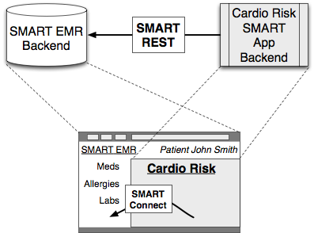

Nvigation
Totorials
Data Modeling + Querying
Reference
Libraries
Presentation (2010-08-26)
Downloads
Developers Documentation: Getting Started
From Smart-project
This Guide is intended for software developers who want to write SMART apps -- and it's a work in progress! If you have any questions, please drop a note in our
Contents |
What is SMART?
SMART provides a unified mechanism for diverse applications to interact with medical-record data. SMART Apps built against the SMART API can be embedded within any SMART Container. A SMART Container is, most often, an Electronic Medical Record (EMR) system used by physicians, but might also be a Personal Health Record (PHR) such as Indivo used by patients, or a data-analytics platform such as i2b2 used by researchers.
For example, a SMART app might analyze a person's risk of heart disease based on recent labs and demographic information. This app can then be deployed on Regenstrief's CareWeb EHR, Children Hospital Boston's Indivo PCHR, or Harvard Medical School's i2b2 analytics engine. As other EMR vendors adopt the SMART platform, the app's reach increases without changing a single line of code.
|  |  |
Anatomy of a SMART App

A SMART app is a normal web application, embedded as a frame within the SMART Container's user interface, with access to the SMART API for interacting with health data. A patient, Penny, may use a medication browser app within her PCHR. Meanwhile, a primary care doctor Dave may use the same app within his clinic-based EMR to view the medications of a patient scheduled for an appointment next week. Penny's PCHR and Dave's EMR are both SMART containers; they both expose the SMART API; and they can both display the medication browser app. Though they may function very differently behind the scenes, they can both embed the exact same medication-list-manager app because they present the same API. Importantly, in any given user session (Penny's or Dave's), the medication-list-manager is connected to only one SMART container.
The screenshots to the right demonstrate the same medication list application running in the context of two different SMART containers: a simplified EMR, and the analytics platform i2b2.
A SMART app can access the SMART API in two ways:
- via "SMART Connect", using Javascript calls from our client library
- via "SMART REST", using OAuth-signed REST calls to a SMART container
Both of these approaches can be used to get at the same underlying data. SMART Connect is for simple applications whose logic can be completely built in HTML and JavaScript. SMART REST is for applications that may need to perform significant back-end processing, in particular when using additional external data sources.
Whether you access data via SMART Connect, SMART REST, or a combination, your app will load the SMART App Javascript Libraries. In the case of SMART Connect, this library is the sole access point. In the case of SMART REST, the library provides the OAuth token handoff and medical-record context, which your app can then send back to its back-end for use in REST calls.
SMART Connect
Writing a purely browser-based app in HTML5 and JavaScript is as easy as including the client-side JavaScript libraries and making API calls! Keep in mind that SMART Connect calls can only access data while the end-user remains online, since authentication depends on that user's existing session with the SMART container. If your app needs to access data from your web application's backend or while the user is offline, you'll need to make some REST calls as well.
SMART REST
Apps with server-side requirements, or apps that need offline access to the SMART API, use the REST interface, which exposes data as resources accessible via HTTP GET, POST, PUT, or DELETE. To ensure apps are authorized to access the resources they request, the SMART container authenticates each REST API call using OAuth, a scheme by which a SMART container or user may delegate
The delegation takes the form of a token/secret pair, generated by the SMART container and handed off to the application (with permission!). After tokens are obtained, each HTTP request is signed using the shared secret.
Writing a SMART REST app requires a bit more work than a SMART Connect app, because the app must be able to:
- Interact with the SMART container to obtain tokens
- Store tokens securely, maintaining appropriate sessions
- Select the appropriate token and sign each SMART REST API call
A few words about #1. The OAuth specification defines a "dance" among three parties (client app, the server, and the resource owner) enabling the client app to obtain access tokens. SMART REST apps obtain tokens by a simpler alternative using our JavaScript library, as explained in our tutorials.
To simplify the job of working with SMART REST, we provide client libraries in java and python.
OK, I'm ready to code
You'll want to follow our HOWTOs in order:
- HOWTO Build a SMART App, which focuses on SMART Connect.
- HOWTO Build a SMART App - REST API Calls
- HOWTO Build SMART Background and Helper Apps
For all of these, you can find our code on SMART source code on github.